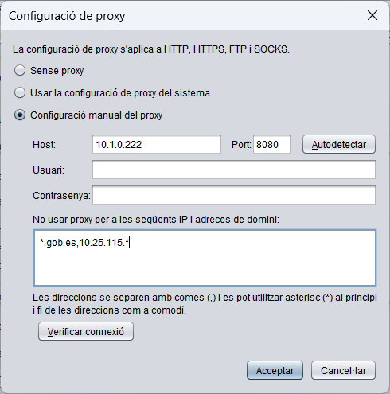

Configuració de proxy
Autofirma ha d'accedir a Internet per diferents motius i, de ser necessari, s'haurà de configurar un proxy de xarxa per a permetre-li-ho. Els propòsits per als quals Autofirma pot requerir l'accés a la xarxa són:
- Comunicar-se amb les pàgines web en les quals es realitzen tràmits de signatura.
- Buscar actualitzacions (Només si es troba habilitada l'opció).
- Enviar estadístiques (Només si es troba habilitada l'opció).
Totes les conexiónes de xarxa realitzades per Autofirma aplicaran la configuració de proxy ací establida.

Les opcions de configuració de
proxy són:
- Sense proxy: Les connexions de xarxa es faran de manera directa.
- Configuració de proxy del sistema: L'aplicació identificarà la configuració que ha d'aplicar per a cada URL segons la configuració establida en el sistema operatiu i/o navegador. Esta configuració pot no ser exactament igual a l'establida en Windows.
- Configuració manual de proxy: Permet establir la configuració específica de proxy a utilitzar. Les opcions configurables són:
- Host: Nom de domini o IP del proxy.
- Port: Número de port d'accés al proxy.
- Usuari: Nom d'usuari a utilitzar quan el proxy requerisca autenticació. Opcional.
- Contrasenya: Contrasenya d'usuari a utilitzar quan el proxy requerisca autenticació. Opcional.
- No usar proxy per a les següents adreces IP i adreces de domini: Llistat d'adreces IP i noms de domini als quals s'ha d'accedir de manera directa (sense passar pel proxy configurat manualment). Comunament, es configuraran ací les adreces de la intranet en la qual es treballe quan es realitzen operacions de signatura des d'aplicacions web situades tant dins com fora de la seua intranet.
Les adreces s'escriuran separades per comes (,) i es poden escriure asteriscos (*) al principi o final de cadascuna a manera de comodí per a identificar subdominis o subxarxes completes. Opcional.
Addicionalment, es proporcionen els següents opcions:
- Autodetectar: Extrau de la configuració del sistema l'host i el port a utilitzar per a una direcció genèrica.
- Verificar connexió: Comprova la configuració manual de proxy per a l'accés a una direcció genèrica.
La configuració establida s'aplicarà en polsar sobre el botó OK. Si es polsa el botó Cancel·lar, es tancarà la finestra sense aplicar la configuració.